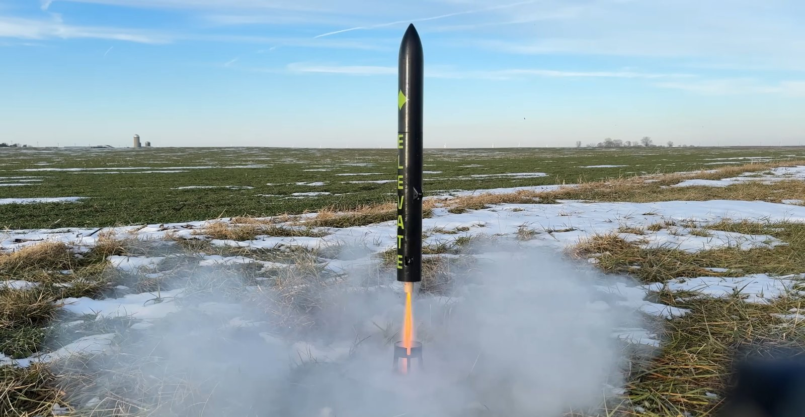
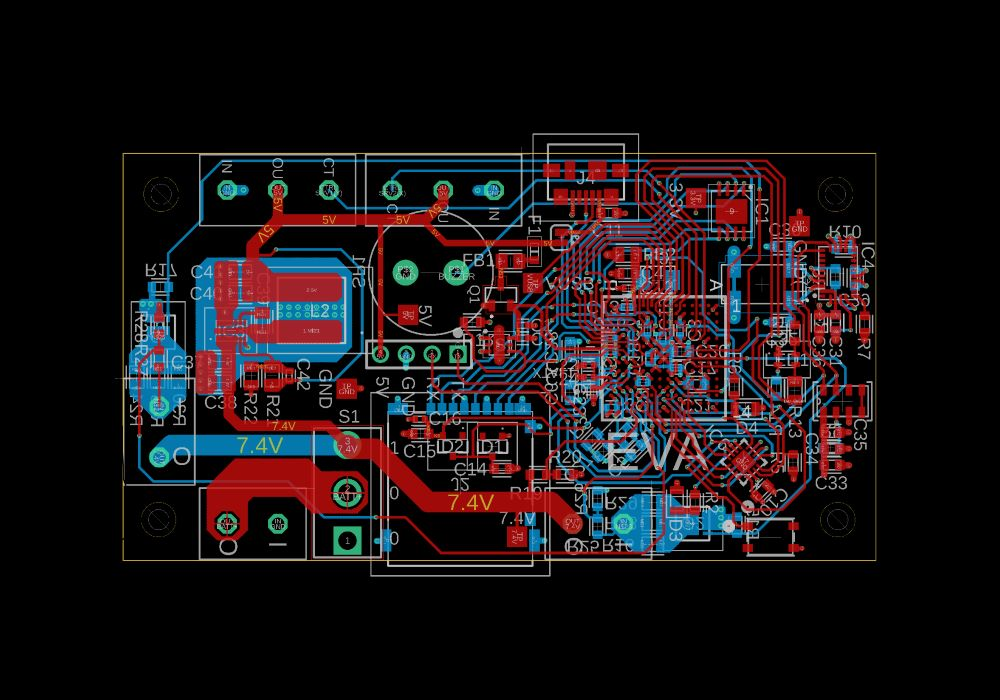
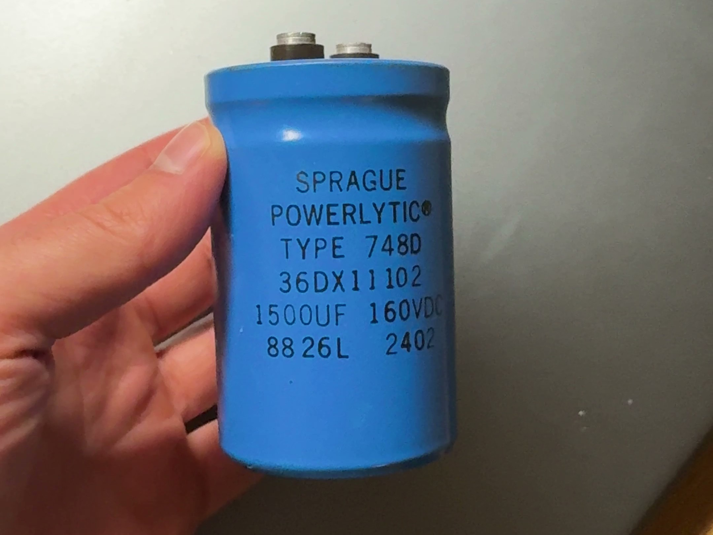
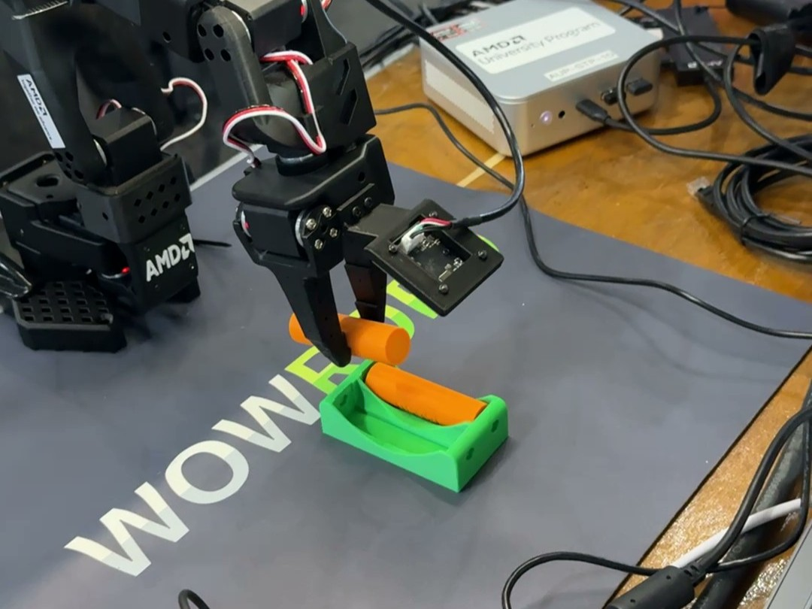
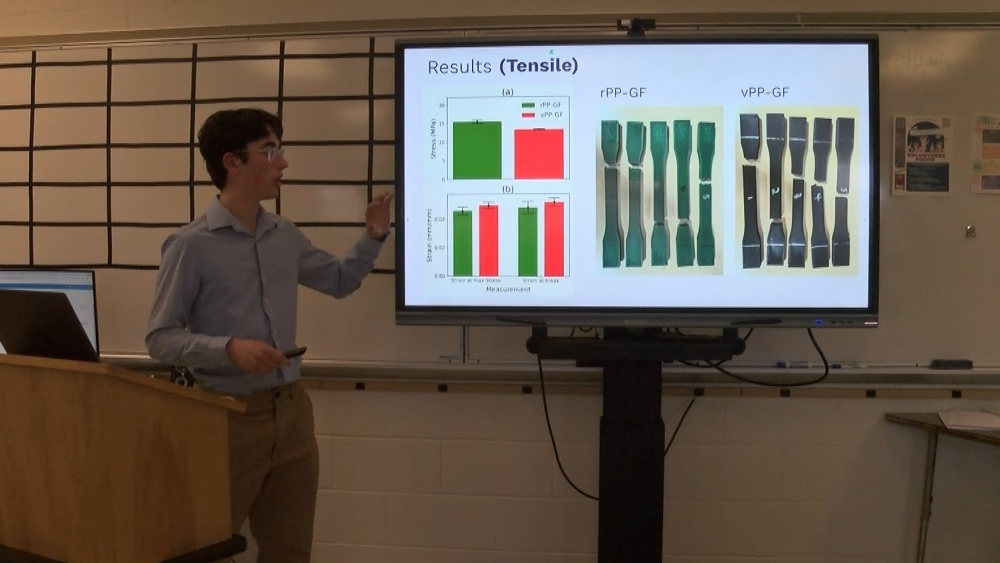

01 — Projects
Selected work

MAVERIK
Flight Computer · Gen 2
Altium · STM32 · C/C++ · embedded systems
Elevate's next-generation flight computer — STM32, UWB + RF comms, three pyro channels, and a 5V/8A buck, 70% smaller than the prototypes before it. Runs the full flight software stack: sensor drivers, Kalman filter, state machine, and control loop.
watch the build series →
Elevate
A Rocket That Can Steer Itself
control systems · Kalman filters · simulation · flight testing
A thrust-vector-controlled model rocket stabilized by a 2-axis gimbal and a direct-quaternion non-linear P²+I controller, which held attitude within 5° of setpoint on the final of 4 launches across 2 design iterations. Build and flight content has reached 1M+ views.
watch the flights →
EVA
Flight Computer · Gen 1
PCB design · schematic design · C/C++ · state machines
The flight computer that flew Elevate — schematic, layout, and firmware built from scratch, with onboard power, sensing, and pyro channels driving the rocket's 2-axis TVC gimbal.
watch the build →
High-Voltage Capacitor Charger
Power Electronics
power electronics · magnetics · prototyping
A zero-voltage-switching flyback driver for rapidly charging a 15,000 µF capacitor bank to 160 VDC — designed, built, and tested at home.
see more builds →
18650 Battery Assembler
Robotics · ML
robotics · imitation learning · Python
Trained a robotic arm to assemble 18650 cells from teleoperated demonstrations using an ACT imitation-learning policy. Honorable Best AMD Hack at StarkHacks.
see the code →
Sustainability Research
Published Research
differential scanning calorimetry · tensile analysis · Charpy analysis · materials science · Python · 3D printing
A paper I authored on recycling polypropylene from fishing nets and rope and reinforcing it with glass fiber as 3D-printer filament — a way to reduce ocean plastic. Characterized the material with DSC, tensile, and Charpy analysis, then presented and defended the research.
read the paper →02 — Where I've been
Experience
Reflect Orbital · Electrical Engineering Intern
May – Aug 2026
Flight computer design end-to-end, power converters, EMI-conscious layout, radiation-tolerant compute trades.
Purdue SoCET · Analog Design Engineer
Jan – May 2026
SAR ADC and Strong-Arm comparator design in Cadence Virtuoso for a student-built SoC.
SpaceX · Automation & Controls Engineering Intern
Jan – Aug 2025
Designed the full electronics suite for an auto-leveling vehicle-transport system; shipped production automation tools (panels, PCBs, PLCs) factory-wide.
The Data Mine (Viasat) · Undergraduate Researcher
Aug – Dec 2024
Monte Carlo simulation of orbital collisions in Python to model sustainable debris limits.
03 — Education
Education
Purdue University · B.S. Electrical Engineering
Aug 2024 – May 2028
GPA 4.0/4.0 · Dean's List ×4 · NSCF Keynote Scholarship Finalist (top 2.5%)
RELEVANT COURSEWORK: ASIC DESIGN · MICROPROCESSOR SYSTEMS · SIGNALS & SYSTEMS · DIGITAL DESIGN
04 — About
What I'm after
I'm interested in the hardware that makes AI possible — efficient compute, the silicon it runs on, and the power systems that feed it. I think analog and mixed-signal design will play a big role in making compute more efficient, and I like proving ideas by building them: boards, converters, controllers, and the occasional self-steering rocket.